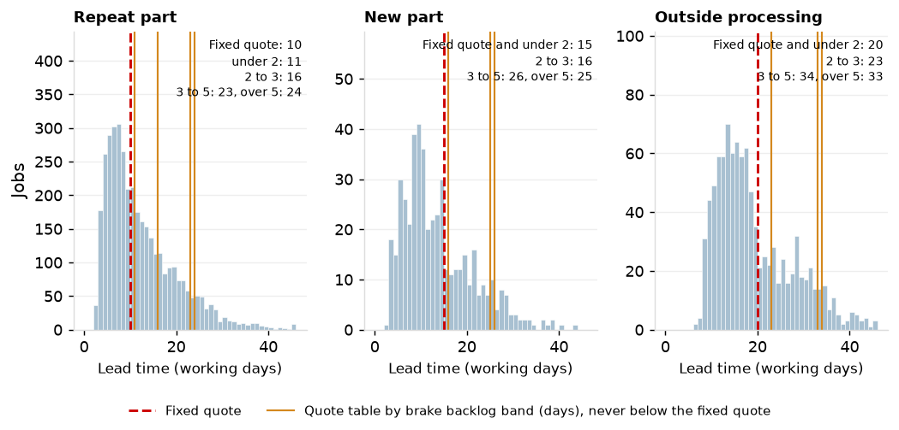
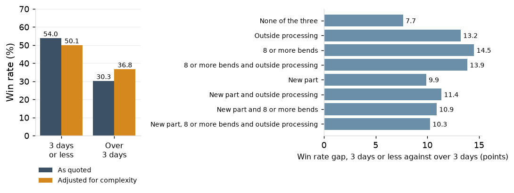

Project 7 report
Custom sheet-metal fabrication job shop, about 120 employees, one plant. Jobs shipped in 2025, whole year and Q2 to Q4; quotes with the RFQ received from 2023 to 2025.
Sources: ERP quotes, orders, jobs and shipments, shop-floor data collection (batch 20261003T152921Z-20250101). Lead time in working days from the release day to the ship day; turnaround in weekdays.
1. The fixed quote in the lead-time distribution
The 10-day repeat quote sits at the 55th percentile of 2025 repeat lead time (69th in Q2 to Q4), the 15-day new-part quote at the 69th (87th) and the 20-day outside-processing quote at the 67th (85th). Standard promises shipped 78.2% on time for the year and 94.2% in Q2 to Q4.
| Period | Routing class | Jobs | Fixed quote | Percentile of the quote | Median lead time | 80th percentile | 90th percentile | On time, all jobs | Standard promises | Lead time within the quote, standard promises | On time, standard promises |
|---|
| 2025 | Repeat part | 3,767 | 10 | 54.7% | 10 | 18 | 23 | 78.7% | 3,068 | 46.7% | 80.3% |
| 2025 | New part | 481 | 15 | 69.4% | 11 | 20 | 25 | 78.8% | 391 | 62.7% | 78.3% |
| 2025 | Outside processing | 997 | 20 | 66.8% | 16 | 27 | 31 | 67.8% | 834 | 61.5% | 70.3% |
| 2025 | All | 5,245 | 12.4 | 58.3% | 11 | 19 | 25 | 76.6% | 4,293 | 51.1% | 78.2% |
| 2025 Q2 to Q4 | Repeat part | 2,738 | 10 | 69.1% | 8 | 13 | 16 | 91.3% | 2,213 | 63.4% | 95.3% |
| 2025 Q2 to Q4 | New part | 349 | 15 | 86.8% | 10 | 14 | 17 | 92.0% | 280 | 83.9% | 94.3% |
| 2025 Q2 to Q4 | Outside processing | 728 | 20 | 85.2% | 15 | 19 | 22 | 84.6% | 604 | 82.8% | 90.1% |
| 2025 Q2 to Q4 | All | 3,815 | 12.4 | 73.8% | 9 | 15 | 18 | 90.1% | 3,097 | 69.0% | 94.2% |
Table 1. The fixed quote against the lead time of jobs shipped, by routing class, 2025 and Q2 to Q4.

Figure 1. Lead time of jobs shipped in 2025 by routing class, with the fixed quote and the quote-table values by brake backlog band marked.
2. Rush lines and short promises
Rush lines ship within the standard lead time on 93.9% of jobs (96.0% in Q2 to Q4) and on time to their promise on 70.7% (71.1%); short promises not flagged rush 84.3% (91.0%) and 67.0% (75.3%). They are 13.1% and 5.1% of jobs and together 23.6% of late jobs and 22.9% of days late for the year, 52.2% and 54.0% in Q2 to Q4. P2 attributes 791 of their 1,064 days late to the promise itself.
3. The quote table
A quote from the 80th-percentile lead time by routing class and brake backlog at release, never below the fixed quote, is met on 67.0% of non-rush jobs for the year and 82.1% in Q2 to Q4 when each job is quoted from the jobs shipped before its release, against 53.0% and 70.5% for the fixed quote; it is longer than the fixed quote on 43.6% and 33.9% of jobs. The rule quotes the 80th percentile, so 80% is its hit rate by construction on the jobs quoted. The table as fitted on 2023 to 2025 (Table 2) is met in sample on 79.8% and 84.2% and is longer on 84.5% and 79.2%; the gap for the year is what the table's high-backlog bands learn from the 2024 to 2025 event. Under 2 days of backlog the table gives 11, 12 and 17 days; its lowest band for repeat parts is 11 days against the fixed 10, so every repeat part is quoted at least one day longer, and the median lengthening where longer is 1 day in Q2 to Q4. The trailing 13-week rule is met on 75.0% and 88.3% and is longer on 83.8% and 82.9%.
| Routing class | Brake backlog at release (days) | Fixed quote | Jobs | 80th-percentile lead time | Quote (never below the fixed quote) | Jobs, ordinary quarters | 80th percentile, ordinary quarters |
|---|
| Repeat part | under 2 | 10 | 7,978 | 11 | 11 | 7,279 | 10 |
| Repeat part | 2 to 3 | 10 | 885 | 16 | 16 | 660 | 15 |
| Repeat part | 3 to 5 | 10 | 519 | 23 | 23 | 213 | 17 |
| Repeat part | over 5 | 10 | 737 | 24 | 24 | 82 | 26 |
| New part | under 2 | 15 | 1,009 | 12 | 15 | 916 | 12 |
| New part | 2 to 3 | 15 | 89 | 16 | 16 | 70 | 16 |
| New part | 3 to 5 | 15 | 77 | 26 | 26 | 26 | 15 |
| New part | over 5 | 15 | 81 | 25 | 25 | 9 | |
| Outside processing | under 2 | 20 | 2,192 | 17 | 20 | 1,988 | 17 |
| Outside processing | 2 to 3 | 20 | 244 | 23 | 23 | 191 | 21 |
| Outside processing | 3 to 5 | 20 | 139 | 34 | 34 | 58 | 21 |
| Outside processing | over 5 | 20 | 181 | 33 | 33 | 35 | 36 |
Table 2. The quote table: 80th-percentile lead time by routing class and brake backlog at release, jobs shipped 2023 to 2025.
| Rule | Met, 2025 | Met, Q2 to Q4 | Longer than the fixed quote, 2025 | Longer, Q2 to Q4 | Mean quote, 2025 | Mean quote, Q2 to Q4 | Met, released 2024 Q4 | Met, released 2025 Q1 | Met, released 2025 Q2 | Met, released 2025 Q3 | Met, released 2025 Q4 |
|---|
| Fixed quote | 53.0% | 70.5% | | | 12.4 | 12.4 | 1.6% | 11.6% | 68.2% | 75.0% | 82.6% |
| Quote table, as fitted on 2023 to 2025 (in sample) | 79.8% | 84.2% | 84.5% | 79.2% | 17.7 | 15.2 | 43.9% | 82.1% | 86.7% | 79.2% | 86.6% |
| Quote table, from jobs shipped before each release (out of sample) | 67.0% | 82.1% | 43.6% | 33.9% | 15.5 | 15.1 | 3.6% | 49.7% | 86.9% | 75.3% | 83.6% |
| Routing class, trailing 13 weeks | 75.0% | 88.3% | 83.8% | 82.9% | 17.9 | 17.5 | 2.0% | 66.8% | 97.8% | 80.8% | 84.9% |
Table 3. Four quote rules on non-rush jobs shipped in 2025: share meeting the quote, share quoted longer than the fixed quote, mean quote, and share meeting the quote by release quarter.
4. By release quarter
Jobs released in 2024 Q4 (440) met the fixed quote on 1.6% and the trailing rule on 2.0%; the quote table as fitted, reading the backlog on the day, quoted them 22.7 days on average and was met on 43.9% (3.6% out of sample). From jobs released in 2025 Q1 onward the quote table is met on 83.6% for the year (73.7% out of sample), the trailing rule on 82.7% and the fixed quote on 58.5%. The trailing rule quotes 21 to 29 days to jobs released in 2025 Q2 and is met on 97% to 99% of them; the quote table carries load through the backlog band rather than a window. For jobs released in 2025 Q3 and Q4 the out-of-sample quote table and the fixed quote are met at the same rate (75.3% against 75.0%, 83.6% against 82.6%); the table's gain is on jobs released from 2025 Q1 to Q2, into and out of the event.

Figure 2. Share of non-rush jobs meeting the fixed quote, the out-of-sample quote table and the trailing 13-week rule, by release quarter; the line is 80%.
5. Win rate and turnaround
Quotes sent within 3 days win 54.0% against 30.3% for those taking longer, a gap of 23.6 points and 13.3 (12.0 to 14.7) after adjusting for RFQ complexity. Within the eight complexity groups the gap is 7.7 to 14.5 points. The 7,880 quotes turned in 0 to 1 day hold no new parts, no parts with 8 or more bends and no outside processing. The win rate overall is 45.5% on 26,996 quotes; 64.3% are sent within 3 days.

Figure 3. Win rate by quote turnaround, as quoted and adjusted for RFQ complexity, and the gap within each complexity group.
6. Rush RFQs
On rush RFQs the win rate falls from 54.3% at a quoted lead time of 5 days or fewer to 23.9% at 12 or more, and lead time is the entered lost reason on 7.1% to 11.5% of them. The quote table lengthens 43.6% of non-rush promises for the year and 33.9% in Q2 to Q4 out of sample (84.5% and 79.2% as fitted).

Figure 4. Win rate on rush RFQs by quoted lead time.
7. Customers, key accounts and part families
Lakeside Conveyor Co., the customer with the most quotes (5,144), wins 31.5% against 44.5% expected from the complexity of its RFQs. Among the ten customers with the most quotes the adjusted win rate runs from 32.5% (Lakeside Conveyor Co.) to 68.5% (Sterling Farm Systems Co.). Key accounts win 44.7% against 47.5% for other customers. By part family the win rate runs from 35.5% to 50.7% and, adjusted for complexity, from 44.2% to 46.6%.
8. Estimators
The four estimators do not differ: median turnaround is 3 days for each, 35.3% to 36.3% of their quotes take over 3 days, and the adjusted win rate is 44.9% to 47.4%.
9. Lost reasons as entered
5,048 of 12,626 lost quotes carry no reason (40%); price is entered on 3,434 and lead time on 2,209. 2,079 quotes have no decision recorded.
Recommendation
Quote from the table at order entry by routing class and the brake backlog on the day of the quote, never below the fixed quote: out of sample it is met on 82.1% of non-rush jobs in Q2 to Q4 and lengthens 33.9% of them. Refresh the table quarterly from the trailing twelve quarters, all quarters included, so the high-backlog bands keep their counts. Require the rush flag and a named approver on every promise inside the standard lead time (P2). Turn complex RFQs in three days or less. Require a lost reason on every lost quote.
Method and data
A quote is met when the working days from the release day to the ship day are at or under it. The fixed quote is 10 days for repeat parts, 15 for new parts and 20 with outside processing; a new-part job is the first order against a new-part quote line within 60 days of the quote decision. Standard promises are lines that are not rush and not promised inside the standard lead time.
Brake backlog at release is the standard hours of brake operations waiting at 10:00 on the release date, at the brakes' actual-over-standard ratio, in days of crewed brake capacity; bands are under 2, 2 to 3, 3 to 5 and over 5 days. The quote is the 80th-percentile lead time of the routing class and band, rounded up; with fewer than 20 jobs in a band the routing class is used. Out of sample, each job is quoted from jobs shipped before its release date. The ordinary quarters alone hold 82 repeat-part jobs and 9 new-part jobs over 5 days of backlog. Rush lines are not requoted.
Win rate is won over quotes sent, with no decision counted as not won. The adjustment is a logistic model of the win on turnaround over 3 days, new part, 8 or more bends and outside processing; the adjusted rates are the model's mean predicted win rate with every quote set to 3 days or less and to over 3 days, with the interval from 200 resamples of the quotes. Group win rates are adjusted as the overall rate plus the group's rate less the rate expected from its mix of new parts, 8 or more bends, outside processing and rush RFQs.
Appendix
Table 4. Rush lines, short promises and standard promises
| Period | Promise | Jobs | Share of jobs | Mean promised lead | Median lead time | On time to the promise | Within the standard lead time | Late jobs | Share of late jobs | Days late | Share of days late | Released-late days (P2) |
|---|
| 2025 | Rush | 685 | 13.1% | 7.4 | 5 | 70.7% | 93.9% | 201 | 16.4% | 701 | 15.1% | 550 |
| 2025 | Short promise, not rush | 267 | 5.1% | 8.8 | 7 | 67.0% | 84.3% | 88 | 7.2% | 363 | 7.8% | 241 |
| 2025 | Standard promise | 4,293 | 81.8% | 18.9 | 13 | 78.2% | 51.1% | 937 | 76.4% | 3,583 | 77.1% | 0 |
| 2025 Q2 to Q4 | Rush | 495 | 13.0% | 7.1 | 5 | 71.1% | 96.0% | 143 | 37.7% | 460 | 37.3% | 402 |
| 2025 Q2 to Q4 | Short promise, not rush | 223 | 5.8% | 8.6 | 6 | 75.3% | 91.0% | 55 | 14.5% | 205 | 16.6% | 162 |
| 2025 Q2 to Q4 | Standard promise | 3,097 | 81.2% | 18.0 | 10 | 94.2% | 69.0% | 181 | 47.8% | 567 | 46.0% | 0 |
Table 5. Quote rules by release quarter and routing class
| Released | Routing class | Jobs | Fixed: met | Table, in sample: met | Table, in sample: mean quote | Table, in sample: longer | Table, out of sample: met | Table, out of sample: mean quote | Table, out of sample: longer | Trailing 13 weeks: met | Trailing 13 weeks: mean quote | Trailing 13 weeks: longer |
|---|
| 2024 Q4 | New part | 48 | 2.1% | 47.9% | 23.3 | 83% | 2.1% | 15.2 | 8% | 2.1% | 13.9 | 0% |
| 2024 Q4 | Outside processing | 103 | 3.9% | 43.7% | 29.2 | 92% | 8.7% | 21.0 | 34% | 1.9% | 17.5 | 0% |
| 2024 Q4 | Repeat part | 289 | 0.7% | 43.3% | 20.3 | 100% | 2.1% | 12.0 | 73% | 2.1% | 12.0 | 100% |
| 2025 Q1 | New part | 81 | 19.8% | 80.2% | 25.2 | 100% | 42.0% | 19.8 | 42% | 71.6% | 24.8 | 96% |
| 2025 Q1 | Outside processing | 200 | 20.0% | 83.5% | 33.2 | 100% | 41.0% | 25.1 | 40% | 57.5% | 28.9 | 91% |
| 2025 Q1 | Repeat part | 775 | 8.5% | 81.9% | 23.8 | 100% | 52.8% | 18.6 | 97% | 68.6% | 21.8 | 100% |
| 2025 Q2 | New part | 106 | 87.7% | 89.6% | 16.8 | 53% | 90.6% | 17.6 | 53% | 99.1% | 22.6 | 96% |
| 2025 Q2 | Outside processing | 230 | 85.7% | 93.5% | 22.5 | 52% | 94.3% | 23.6 | 52% | 97.4% | 29.4 | 100% |
| 2025 Q2 | Repeat part | 795 | 60.5% | 84.4% | 14.6 | 100% | 84.3% | 15.2 | 55% | 97.7% | 21.4 | 100% |
| 2025 Q3 | New part | 100 | 86.0% | 86.0% | 15.0 | 0% | 86.0% | 15.0 | 0% | 79.0% | 13.4 | 0% |
| 2025 Q3 | Outside processing | 175 | 82.9% | 83.4% | 20.1 | 2% | 83.4% | 20.1 | 2% | 76.6% | 18.3 | 6% |
| 2025 Q3 | Repeat part | 764 | 71.7% | 77.4% | 11.1 | 100% | 72.0% | 10.1 | 2% | 81.9% | 12.0 | 100% |
| 2025 Q4 | New part | 83 | 91.6% | 91.6% | 15.0 | 0% | 91.6% | 15.0 | 0% | 84.3% | 13.0 | 0% |
| 2025 Q4 | Outside processing | 174 | 95.4% | 95.4% | 20.0 | 0% | 95.4% | 20.0 | 0% | 91.4% | 18.3 | 0% |
| 2025 Q4 | Repeat part | 637 | 77.9% | 83.5% | 11.0 | 100% | 79.3% | 10.4 | 38% | 83.2% | 10.9 | 93% |
Table 6. Promised and actual lead time by part family and routing class
| Period | Part family | Routing class | Jobs | Mean promised lead | Median lead time | 80th percentile | Within the standard lead time | On time |
|---|
| 2025 | Assembly | New part | 50 | 18.8 | 13 | 23 | 60.0% | 70.0% |
| 2025 | Assembly | Outside processing | 123 | 21.9 | 18 | 31 | 56.1% | 55.3% |
| 2025 | Assembly | Repeat part | 364 | 14.9 | 10 | 20 | 50.0% | 65.9% |
| 2025 | Bracket | New part | 135 | 17.6 | 11 | 20 | 68.9% | 81.5% |
| 2025 | Bracket | Outside processing | 218 | 21.1 | 16 | 26 | 66.5% | 65.6% |
| 2025 | Bracket | Repeat part | 832 | 15.8 | 9 | 16 | 60.1% | 86.2% |
| 2025 | Chassis | New part | 55 | 18.1 | 12 | 18 | 70.9% | 81.8% |
| 2025 | Chassis | Outside processing | 69 | 20.7 | 13 | 25 | 71.0% | 72.5% |
| 2025 | Chassis | Repeat part | 294 | 15.1 | 9 | 16 | 56.5% | 78.2% |
| 2025 | Enclosure | New part | 65 | 18.0 | 14 | 23 | 56.9% | 67.7% |
| 2025 | Enclosure | Outside processing | 137 | 21.1 | 17 | 28 | 63.5% | 65.0% |
| 2025 | Enclosure | Repeat part | 578 | 15.3 | 10 | 17 | 50.0% | 78.5% |
| 2025 | Panel | New part | 107 | 17.3 | 9 | 15 | 81.3% | 88.8% |
| 2025 | Panel | Outside processing | 268 | 21.7 | 16 | 26 | 67.9% | 70.1% |
| 2025 | Panel | Repeat part | 908 | 15.8 | 9 | 17 | 57.0% | 81.6% |
| 2025 | Weldment | New part | 69 | 16.2 | 10 | 19 | 69.6% | 72.5% |
| 2025 | Weldment | Outside processing | 182 | 21.5 | 16 | 24 | 73.6% | 75.8% |
| 2025 | Weldment | Repeat part | 791 | 15.9 | 10 | 19 | 51.2% | 73.6% |
| 2025 Q2 to Q4 | Assembly | New part | 38 | 18.2 | 10 | 17 | 71.1% | 84.2% |
| 2025 Q2 to Q4 | Assembly | Outside processing | 86 | 21.1 | 16 | 22 | 74.4% | 76.7% |
| 2025 Q2 to Q4 | Assembly | Repeat part | 270 | 14.2 | 9 | 13 | 63.0% | 82.6% |
| 2025 Q2 to Q4 | Bracket | New part | 96 | 16.7 | 9 | 13 | 87.5% | 95.8% |
| 2025 Q2 to Q4 | Bracket | Outside processing | 150 | 20.2 | 14 | 19 | 86.0% | 82.0% |
| 2025 Q2 to Q4 | Bracket | Repeat part | 621 | 15.0 | 7 | 12 | 75.0% | 95.2% |
| 2025 Q2 to Q4 | Chassis | New part | 40 | 17.1 | 12 | 15 | 87.5% | 90.0% |
| 2025 Q2 to Q4 | Chassis | Outside processing | 52 | 19.7 | 12 | 17 | 92.3% | 88.5% |
| 2025 Q2 to Q4 | Chassis | Repeat part | 208 | 14.0 | 8 | 12 | 71.6% | 90.9% |
| 2025 Q2 to Q4 | Enclosure | New part | 40 | 16.8 | 11 | 15 | 80.0% | 87.5% |
| 2025 Q2 to Q4 | Enclosure | Outside processing | 102 | 19.9 | 16 | 21 | 78.4% | 79.4% |
| 2025 Q2 to Q4 | Enclosure | Repeat part | 428 | 14.7 | 9 | 14 | 60.7% | 87.4% |
| 2025 Q2 to Q4 | Panel | New part | 84 | 16.9 | 9 | 13 | 95.2% | 96.4% |
| 2025 Q2 to Q4 | Panel | Outside processing | 197 | 20.8 | 14 | 18 | 87.8% | 87.8% |
| 2025 Q2 to Q4 | Panel | Repeat part | 643 | 15.0 | 7 | 12 | 73.1% | 93.9% |
| 2025 Q2 to Q4 | Weldment | New part | 51 | 14.9 | 9 | 13 | 88.2% | 88.2% |
| 2025 Q2 to Q4 | Weldment | Outside processing | 141 | 20.9 | 15 | 18 | 89.4% | 90.1% |
| 2025 Q2 to Q4 | Weldment | Repeat part | 568 | 15.0 | 9 | 13 | 66.4% | 91.2% |
Table 7. Win rate by turnaround band
| Turnaround (weekdays) | Quotes | Win rate | New part | 8 or more bends | Outside processing |
|---|
| 0 to 1 | 7,880 | 60.9% | 0.0% | 0.0% | 0.0% |
| 2 to 3 | 9,484 | 48.2% | 24.9% | 31.5% | 28.4% |
| 4 to 5 | 8,283 | 30.3% | 35.2% | 46.4% | 41.8% |
| 6 and over | 1,349 | 30.5% | 34.0% | 42.6% | 42.4% |
Table 8. Win rate by complexity group and turnaround
| New part | 8 or more bends | Outside processing | Quotes, 3 days or less | Win rate, 3 days or less | Quotes, over 3 days | Win rate, over 3 days | Gap (points) |
|---|
| no | no | no | 11,155 | 60.7% | 439 | 53.1% | 7.7 |
| no | no | yes | 1,471 | 47.7% | 2,249 | 34.5% | 13.2 |
| no | yes | no | 1,876 | 43.6% | 2,845 | 29.0% | 14.5 |
| no | yes | yes | 504 | 37.9% | 724 | 24.0% | 13.9 |
| yes | no | no | 1,215 | 43.3% | 1,739 | 33.4% | 9.9 |
| yes | no | yes | 534 | 32.0% | 789 | 20.7% | 11.4 |
| yes | yes | no | 427 | 34.4% | 578 | 23.5% | 10.9 |
| yes | yes | yes | 182 | 22.5% | 269 | 12.3% | 10.3 |
Table 9. Win rate on rush RFQs by quoted lead time
| Quoted lead time (days) | Quotes | Win rate | Lost with reason lead time, share of quotes |
|---|
| 5 or fewer | 1,277 | 54.3% | 7.1% |
| 6 to 8 | 1,753 | 44.2% | 9.2% |
| 9 to 11 | 669 | 27.7% | 11.5% |
| 12 or more | 460 | 23.9% | 11.5% |
Table 10. Win rate by customer: the ten customers with the most quotes
| Customer | Quotes | Win rate | Expected from complexity | Adjusted win rate | Median turnaround | Over 3 days | New part |
|---|
| Lakeside Conveyor Co. | 5,144 | 31.5% | 44.5% | 32.5% | 3 | 39.1% | 20.8% |
| Clearwater Signal Inc. | 3,625 | 46.5% | 48.0% | 44.0% | 2 | 28.9% | 20.1% |
| Horizon Trailer Co. | 1,730 | 54.3% | 46.3% | 53.5% | 3 | 34.7% | 21.5% |
| Sterling Health Systems Inc. | 1,082 | 36.0% | 46.2% | 35.3% | 3 | 34.0% | 21.0% |
| Harbor Medical Ltd. | 915 | 42.2% | 42.0% | 45.7% | 3 | 48.2% | 19.2% |
| Cedar Controls LLC | 829 | 51.3% | 49.8% | 47.0% | 2 | 25.0% | 20.3% |
| Northfield Electric Ltd. | 677 | 34.7% | 44.0% | 36.2% | 3 | 35.3% | 21.1% |
| Westbrook Networks Co. | 669 | 56.8% | 47.8% | 54.5% | 3 | 29.3% | 20.6% |
| Heritage Vehicle Systems Inc. | 527 | 66.6% | 49.4% | 62.7% | 2 | 25.6% | 19.7% |
| Sterling Farm Systems Co. | 459 | 66.4% | 43.5% | 68.5% | 3 | 42.7% | 22.7% |
Table 11. Win rate by key account and part family
| Customer group | Quotes | Win rate | Expected from complexity | Adjusted win rate | Median turnaround | Over 3 days | New part |
|---|
| Key account | 19,117 | 44.7% | 45.5% | 44.7% | 3 | 35.6% | 20.8% |
| Other | 7,879 | 47.5% | 45.5% | 47.5% | 3 | 35.8% | 22.2% |
| Part family | Quotes | Win rate | Expected from complexity | Adjusted win rate | Median turnaround | Over 3 days | New part |
|---|
| Panel | 5,848 | 50.7% | 50.5% | 45.7% | 2 | 27.6% | 20.5% |
| Bracket | 5,778 | 50.3% | 49.7% | 46.1% | 3 | 27.9% | 26.3% |
| Weldment | 4,963 | 50.0% | 50.5% | 45.0% | 2 | 25.0% | 16.9% |
| Enclosure | 4,896 | 35.5% | 36.9% | 44.2% | 4 | 52.5% | 18.2% |
| Assembly | 2,806 | 42.8% | 42.1% | 46.2% | 3 | 43.9% | 21.9% |
| Chassis | 2,705 | 37.1% | 36.0% | 46.6% | 4 | 50.5% | 24.7% |
Table 12. Quote volume and turnaround by estimator
| Estimator | Year | Quotes | Median turnaround | Mean turnaround | Over 3 days | Win rate | New part |
|---|
| EST-01 | 2023 | 3,308 | 3 | 2.89 | 35.6% | 45.6% | 21.6% |
| EST-01 | 2024 | 3,599 | 3 | 2.93 | 37.1% | 45.1% | 21.6% |
| EST-01 | 2025 | 3,879 | 3 | 2.79 | 33.5% | 45.9% | 20.9% |
| EST-02 | 2023 | 2,078 | 3 | 2.92 | 37.2% | 43.9% | 23.0% |
| EST-02 | 2024 | 2,235 | 3 | 2.91 | 36.8% | 45.5% | 20.4% |
| EST-02 | 2025 | 2,455 | 3 | 2.87 | 35.1% | 45.1% | 21.6% |
| EST-03 | 2023 | 1,618 | 3 | 2.96 | 36.4% | 44.8% | 20.1% |
| EST-03 | 2024 | 1,738 | 3 | 2.86 | 34.3% | 47.3% | 18.5% |
| EST-03 | 2025 | 2,008 | 3 | 2.90 | 35.3% | 43.3% | 20.8% |
| EST-04 | 2023 | 1,254 | 3 | 3.00 | 37.1% | 45.3% | 23.2% |
| EST-04 | 2024 | 1,337 | 3 | 2.83 | 34.5% | 47.4% | 22.7% |
| EST-04 | 2025 | 1,487 | 3 | 2.93 | 36.4% | 48.6% | 20.7% |
| Estimator, 2023 to 2025 | Quotes | Win rate | Expected from complexity | Adjusted win rate | Median turnaround | Over 3 days | New part |
|---|
| EST-01 | 10,786 | 45.5% | 45.5% | 45.5% | 3 | 35.3% | 21.3% |
| EST-02 | 6,768 | 44.9% | 45.5% | 44.9% | 3 | 36.3% | 21.6% |
| EST-03 | 5,364 | 45.1% | 45.7% | 44.9% | 3 | 35.3% | 19.9% |
| EST-04 | 4,078 | 47.2% | 45.4% | 47.4% | 3 | 36.0% | 22.1% |
Table 13. Lost reasons as entered
| Lost reason | Turnaround 3 days or less | Turnaround over 3 days | All |
|---|
| Blank | 2,645 | 2,403 | 5,048 |
| Price | 1,837 | 1,597 | 3,434 |
| Lead time | 1,183 | 1,026 | 2,209 |
| Other | 618 | 580 | 1,198 |
| No bid | 387 | 350 | 737 |